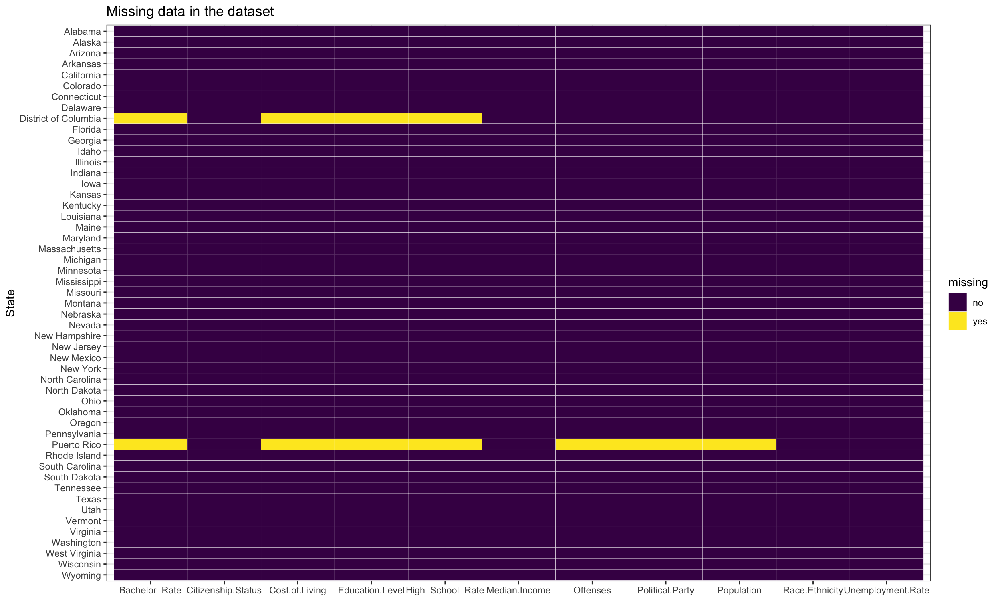
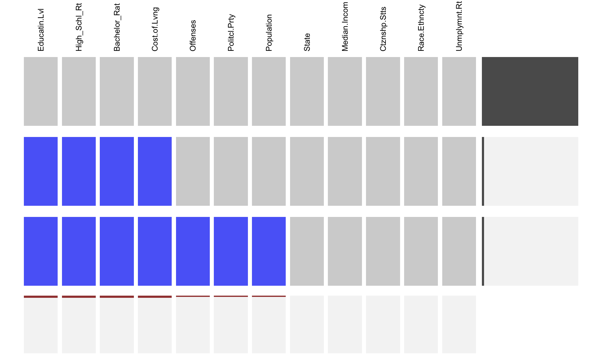
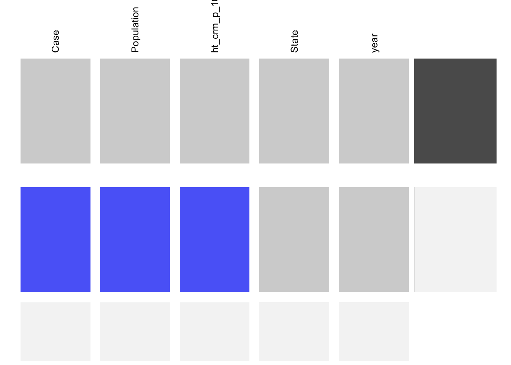

Chapter 4 Missing values
In this part, we study the missing values in our dataset. Having better understanding of missing values helps us to know our dataset better and supports our analysis later.
The data files we use are:
BiasMotivation.csv
location.csv
Offenders.csv
Mixed_data.csv
year.csv
d3_data.csv
4.1 Location and Number of Missing Values
We have a look at each data file to see whether there exist some missing values. If the answer is yes, then we will show the location and the number of missing values in this data file.
First, given a data file, we show how many missing values are in each column. In ‘BiasMotivation.csv’ file,
## Bias_motivation Incidents Category
## 0 0 0There is no missing value in this file.
In ‘location.csv’ file,
## Location Num
## 0 0There is no missing value in this file.
In ‘Offenders.csv’ file,
## Offenders Num Group
## 0 0 0There is no missing value in this file.
In ‘Mixed_data.csv’ file,
## State Offenses Median.Income Education.Level
## 0 1 0 2
## High_School_Rate Bachelor_Rate Citizenship.Status Race.Ethnicity
## 2 2 0 0
## Political.Party Unemployment.Rate Population Cost.of.Living
## 1 0 1 2There are eleven missing values in the data file. There are two NAs in education level/high_school_rate/bachelor_rate/cost of living and one in offenses cases/political party/population. Next, we hope to know where these missing values are.

This graph shows us clearly where NAs are in the data. Since the source data about cost of living and education which includes variables Education.level, Bachelor_Rate and High_School_Rate only talks about states in the U.S., District of Columbia as a federal district and Puerto Rico as a major territory do not have values for these four variables. Puerto Rico’s values for offenses, political party and population are missing. This is also because that Puerto Rico is a major territory of the U.S. and the source data of hate crimes does not include data for that.
In ‘year.csv’ file,
## State Case Population hate_crime_per_100k
## 0 1 1 1
## year
## 0There are three missing values in this file. Due to the construction of the data file, ‘geom_tile’ seems to be inefficient and unclear to show the location of missing values. Also, since there are not many missing values in the data file, we decide to print rows including NAs directly.
## # A tibble: 1 x 5
## State Case Population hate_crime_per_100k year
## <chr> <dbl> <dbl> <dbl> <dbl>
## 1 New Jersey NA NA NA 2012It shows that New Jersey in 2012 has no data for its hate crime cases, population covered and of course the hate crime rate per 100k.
In ‘d3_data.csv’ file,
## State Offenses Population Crime_Rate Median_Income Year
## 0 1 1 1 0 0As this file includes all information in ‘year.csv’ file and just adds one more column about income, we realize that the three missing values are missing information of New Jersey in 2012 in ‘year.csv’ file. The row including NAs printed below confirm our ideas.
## # A tibble: 1 x 6
## State Offenses Population Crime_Rate Median_Income Year
## <chr> <dbl> <dbl> <dbl> <dbl> <dbl>
## 1 New Jersey NA NA NA 74399 2012Therefore, we will not plot the missing patterns of this file since this is redundant and meaningless.
4.2 Patterns of Missing values
As ‘Mixed_data.csv’ and ‘year.csv’ have missing values, here we will explore patterns of missing values in the two files.
In ‘Mixed_data.csv’ file,

The graph shows that there are three missing patterns in the ‘Mixed_data.csv’. The most frequent one is that no data is missing. The remaining two patterns are:
One case has missing values in four columns Education.level, Bachelor_Rate, High_School_Rate and Cost.of.Living.
One case has missing values in seven columns Education.level, Bachelor_Rate, High_School_Rate, Cost.of.Living, Offenses, Political.Party and Population.
In ‘year.csv’ file,

The graph shows that there are two missing patterns in the ‘Mixed_data.csv’. The most frequent one is that no data is missing. The remaining one is that one has missing values in three columns Case, Population and hate_crime_per_100k.
4.3 Actions on missing/abnormal values
It can be noticed that in the mixed data file, Puerto Rico losts most of its data, including hate crime data. Thus it cannot provide any useful information to the analysis. After consideration, we decide to remove Puerto Rico from the dataset.
The District of Columbia, on the one hand, losts its educational data, on the other hand, has an unusual high crime rate(number of hate crime cases per 100k population). After drawing boxplot of the data we conclude that data from District of Columbia is an extreme outlier. Taking into consideration of District of Columbia’s demographics, geography and unique criminal justice system as well as the fact that District of Columbia is literaly a city not a state, we believe that District of Columbia is not a proper representation of state crime info and remove it from the dataset.